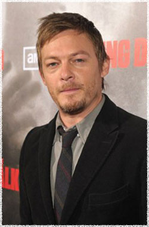

Норман Ридус
 Дэрил Диксон (актёр Норман Ридус) - отлично владеет охотничьим арбалетом, самый приспособленный к жизни в условиях зомби апокалипсиса участник группы.
Норман Ридус (Norman Reedus) - американский актёр, родился 6 января 1969 года в США в Голливуде, в настоящее время проживает в Нью-Йорке.
Норман наиболее известен по роли Мёрфи МакМануса в культовом фильме Святые из Бундока (The Boondock Saints) сценариста и режиссёра Троя Даффи. Также снялся в продолжении Святые из Бундока 2: День всех святых (Boondock Saints 2: All Saints Day) который был выпущен в День Всех Святых (1 сентября) 2009.
Его фильмография включает научно-фантастический триллер Пандорум (Pandorum) с Деннисом Куэйдом и Беном Фостером, 8 миллиметров (8mm), Блэйд 2 (Blade 2), Ритм (Beat), Сплетня (Gossip), Непристойная Бэтти Пейдж (The Notorious Bettie Page) и Гангстер (American Gangster).
Ридус также опытный фотограф и начинающий режиссёр, срежиссировавший три короткометражных фильма, в настоящее время присоединился к работе над фильмом I Was A White Slave In Harlem, который находится в активной разработке.
Известен зрителям по фильмам и сериалам:
Святые из Бундока (The Boondock Saints)
Гангстер (American Gangster)
Кадиллак Рекордс (Cadillac Records)
Закон и порядок. Специальный корпус (Law & Order: Special Victims Unit)
Зачарованные (Charmed)
Гавайи 5.0 (Hawaii Five-0)